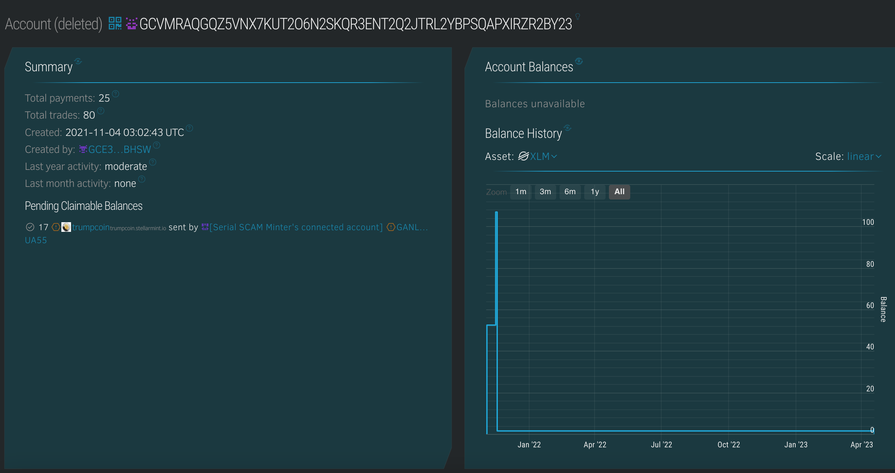
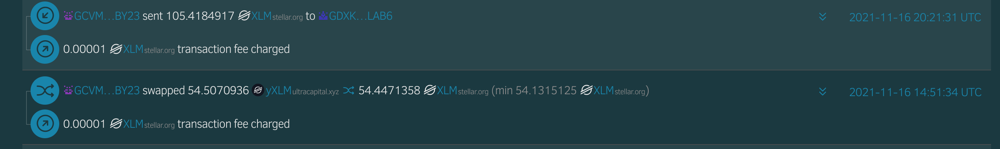
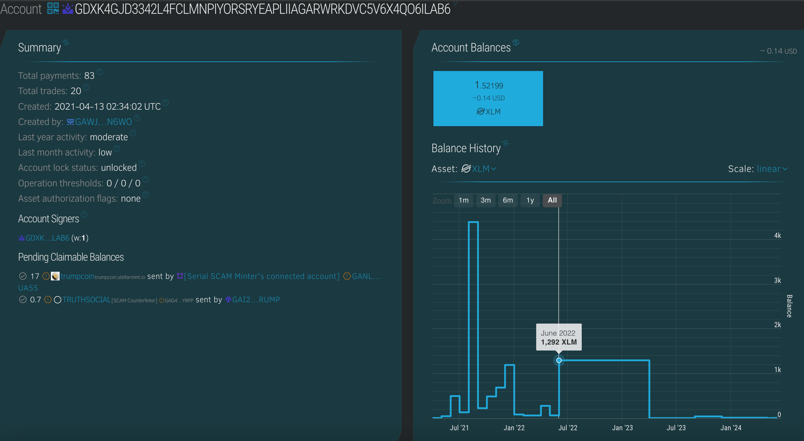
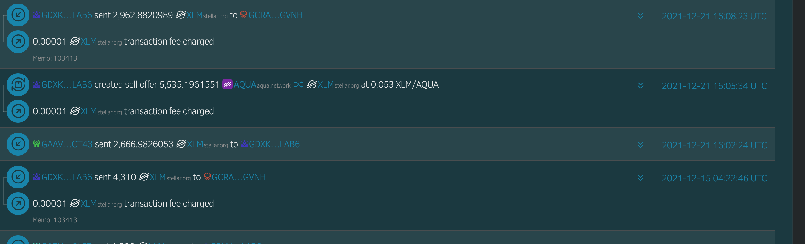
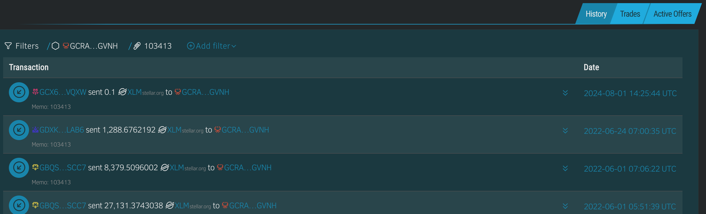
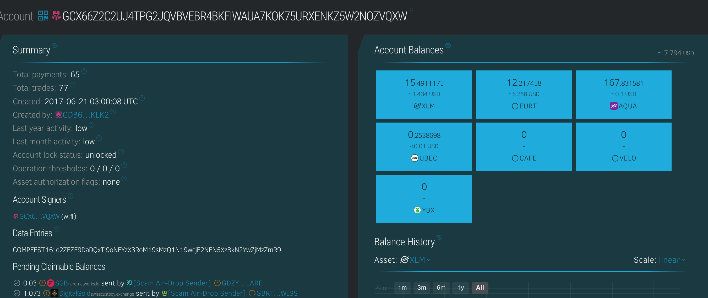

Oh no, I accidentally pushed my secret key on github while developing an arbitrage bot, Now my money is stolen 😭😭😭. Can you help me identify who stole my money? Here is the file i pushed https://github.com/Firdausfarul/Neptunus/blob/master/interleave_testnet_backend/Arbitrageur_XLM_USDC.py . the flag is in blockchain, in one of the thief account.
Author: fahrul
The script reveals the private key of the wallet, along with some other transaction functions.
import json
import random
import time
import base64
import stellar_sdk
from stellar_sdk import Keypair,Server, TransactionBuilder, Network, Signer, Asset, xdr
import requests
secret_key='SDW5NLCZJEXYK3RNXVZLAPZDMKQNYRVPKZUOFUYBNH4SYNSCJWECSISD'
acc=Keypair.from_secret(secret_key)
server = Server("https://horizon.stellar.org")
base_fee = server.fetch_base_fee()*100
for i in range(100):
response1 = requests.get('https://horizon.stellar.org/paths/strict-send?destination_assets=yXLM%3AGARDNV3Q7YGT4AKSDF25LT32YSCCW4EV22Y2TV3I2PU2MMXJTEDL5T55&source_asset_type=native&source_amount=1')
resp1 =response1.json()
path = resp1['_embedded']['records'][0]['path']
path_fr1=[]
for i in range(len(path)):
path_fr1.append((Asset(path[i]['asset_code'], path[i]['asset_issuer'] )))
response2 = requests.get('https://horizon.stellar.org/paths/strict-send?destination_assets=yXLM%3AGARDNV3Q7YGT4AKSDF25LT32YSCCW4EV22Y2TV3I2PU2MMXJTEDL5T55&source_asset_type=native&source_amount=1')
resp2 =response2.json()
path = resp2['_embedded']['records'][0]['path']
path_fr2=[]
for i in range(len(path)):
path_fr2.append((Asset(path[i]['asset_code'], path[i]['asset_issuer'] )))
stellar_account1 = server.load_account(acc.public_key)
Transaction2 = (
TransactionBuilder(
source_account=stellar_account1,
network_passphrase=Network.PUBLIC_NETWORK_PASSPHRASE,
base_fee=base_fee,
)
.append_path_payment_strict_send_op(
destination=acc.public_key,
send_code='yXLM',
send_issuer='GARDNV3Q7YGT4AKSDF25LT32YSCCW4EV22Y2TV3I2PU2MMXJTEDL5T55',
send_amount='1',
dest_code='XLM',
dest_issuer=None,
dest_min='1',
path=path_fr2
)
.build()
)
stellar_account1.sequence += 1
Transaction1 = (
TransactionBuilder(
source_account=stellar_account1,
network_passphrase=Network.PUBLIC_NETWORK_PASSPHRASE,
base_fee=base_fee,
)
.append_path_payment_strict_send_op(
destination=acc.public_key,
send_code='XLM',
send_issuer=None,
send_amount='1',
dest_code='yXLM',
dest_issuer='GARDNV3Q7YGT4AKSDF25LT32YSCCW4EV22Y2TV3I2PU2MMXJTEDL5T55',
dest_min='1',
path=path_fr1
)
.build()
)
# Signing+Submitting Transaction1
Transaction1.sign(acc.secret)
Transaction2.sign(acc.secret)
response1 = server.submit_transaction(Transaction2)
response2 = server.submit_transaction(Transaction1)
print(response1)
print(response2)
The first step would be to attain the public wallet address from this challenge. This can be attain once you have a private key.
This is just simply.
secret_key='SDW5NLCZJEXYK3RNXVZLAPZDMKQNYRVPKZUOFUYBNH4SYNSCJWECSISD'
acc=Keypair.from_secret(secret_key)
print(acc.public_key)
Which prints out the public wallet address GCVMRAQGQZ5VNX7KUT2O6N2SKQR3ENT2Q2JTRL2YBPSQAPXIRZR2BY23
Naturally, once we move over to the Stellar Expert, we can see that the wallet has made a few transactions. As the challenge wanted us to focus on the nefarious outward tranactions, we do notice some that have taken place in the fall of 2021.

From this wallet, we see that the majority of transaction are minute airdrop (less than 0.01 XLM) from exchange wallets. Notably, most of these source addresses have been marked as "Scam" by the Stellar community. This suggests that the owner has pretty bad OPSEC and tend the take the bait from crypto charlatans.
These two are the most important transactions that we need to focus on. One is a bulk transaction of 105 XLM to the wallet GDXK4GJD3342L4FCLMNPIYORSRYEAPLIIAGARWRKDVC5V6X4QO6ILAB6. While the other one is swap transaction between

Usually, in a crypto sweep-and-run operations, the scammers would tend to moves the funds to a different wallet or into fiat currency as soon as possible. This is usually done through a series of transactions to obfuscate the trail.
From this, we see the wallet moved the build of its funds in late 2021 and Early 2022. The bulk of the stolen funds from our original address would have been moved through this batch.

From this we observe a pattern, as that the majority of the larger sum (> 100 XLM) movements were transferred to the wallet GCRAOWEMGUW7N65XLCPRM6W4O4C35T2MJDJFDJEAHMCHAOJXIWZCGVNH. This wallet belongs to bitgo.com, which is not an exchange but rather a third party crypto custodian service. A bulk of their customers are either institutional investors or high flow exchanges. We are not delving into further of this custodian service. But for further challenges, this might be an interesting point to explore.

XLM transactions does allow for memes of a string encoded using either ASCII or UTF-8, up to 28-bytes long. This is traditionally used by exchanges to encode the transaction ID or customer account numbers.
the account ID of 103413 is found within the memo for all of the large transactions.
By filtering all of the transactions with memo containing 103413, we display out the transactions under the suspicious customer account number.

Finally, we realize that the transaction from
GCX66Z2C2UJ4TPG2JQVBVEBR4BKFIWAUA7KOK75URXENKZ5W2NOZVQXW is probably suspicious for this CTF challenges. It's the only transaction from 2024 under the 103413 customer ID. Although IRL blockchain forensics would not have been this straightforward...
Finally we've reached the destination and the flag is in the data entries of the wallet.

COMPFEST16: e2ZFZF9DaDQxTl9oNFYzX3RoM19sMzQ1N19wcjF2NEN5XzBkN2YwZjMzZmR9
However, this is not the flag. This is a base64 encoded string.
COMPFEST16{fEd_Ch41N_h4V3_th3_l3457_pr1v4Cy_0d7f0f33fd}